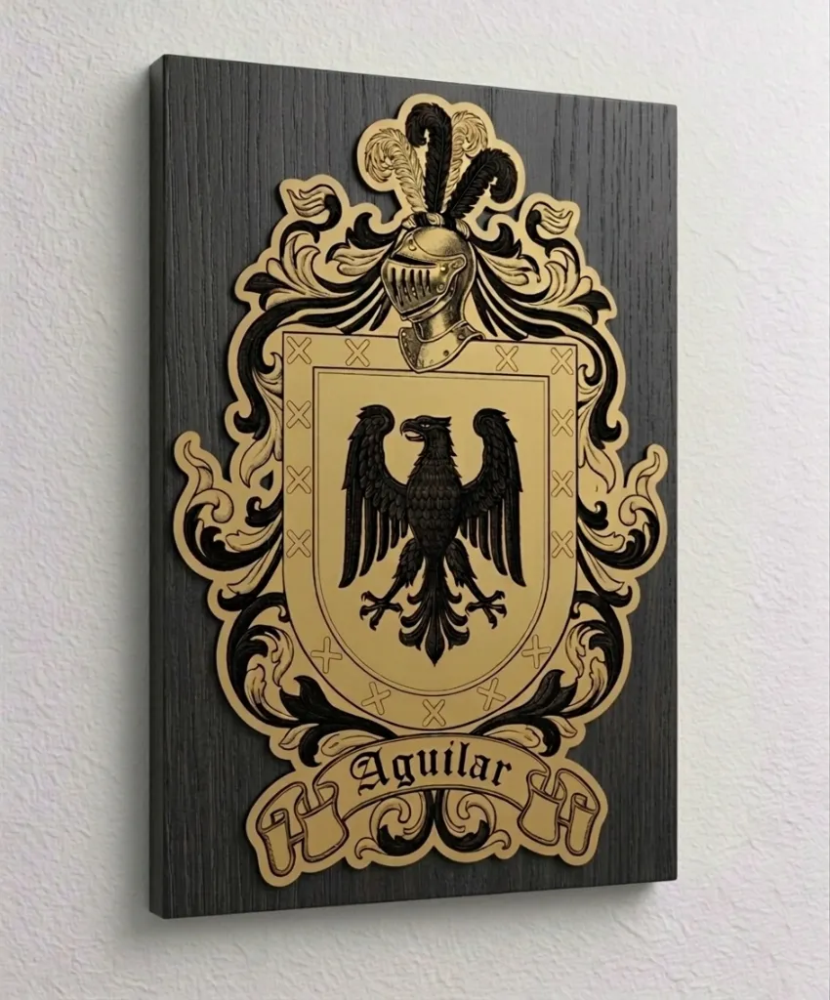
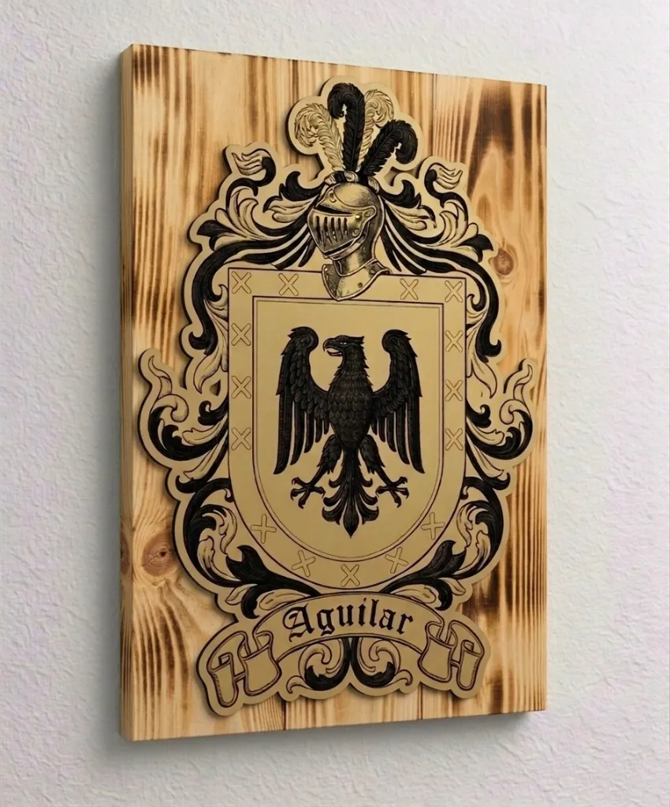
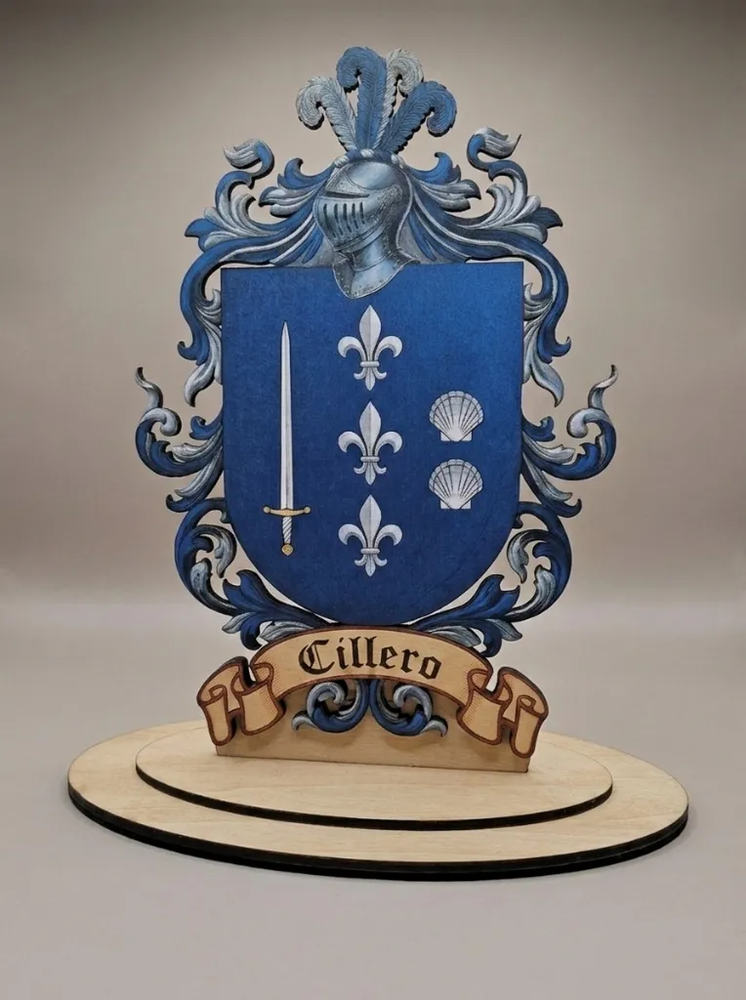

Modelos Disponibles
Escudos personalizados con más de 30 años de experiencia en heráldica.



Escudos para Pared
Reproducción espectacular a gran formato para presidir estancias, salones y pasillos blasonados. La máxima inmersión de tu linaje.

Escudos de Sobremesa
Elegancia en cada escritorio y estantería. Base estable y firmeza para mantener vivos tus orígenes en cualquier rincón del hogar u oficina.

Llaveros Heráldicos
El emblema familiar siempre contigo. Disponibles en diferentes opciones de grabado a elegir: una cara, cara + reverso con mensaje, o dos escudos cruzando linajes.